File: 000030.gt.txt (if the image is defective, simply delete all Arabic text and the line will be excluded)
السبيل .
File: 000031.gt.txt (if the image is defective, simply delete all Arabic text and the line will be excluded)
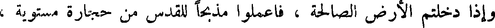
وإذا دخلتم الأرض الصالحة ، فاعملوا مذبحا للقدس من حجارة مستوية ،
File: 000032.gt.txt (if the image is defective, simply delete all Arabic text and the line will be excluded)
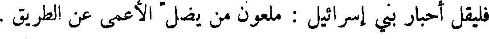
فليقل أحبار بني إسرائيل : ملعون من يضل الأعمى عن الطريق .
File: 000033.gt.txt (if the image is defective, simply delete all Arabic text and the line will be excluded)
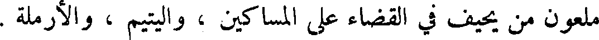
ملعون من يحيف في القضاء على المساكين ، واليتيم والأرملة .
File: 000034.gt.txt (if the image is defective, simply delete all Arabic text and the line will be excluded)
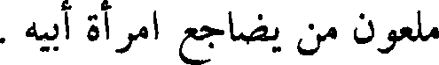
ملعون من يضاجع امرأة أبيه .
File: 000035.gt.txt (if the image is defective, simply delete all Arabic text and the line will be excluded)
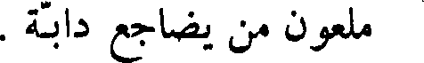
ملعون من يضاجع دابة .
File: 000036.gt.txt (if the image is defective, simply delete all Arabic text and the line will be excluded)
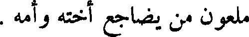
ملعون من يضاجع أخته وأمه .
File: 000037.gt.txt (if the image is defective, simply delete all Arabic text and the line will be excluded)
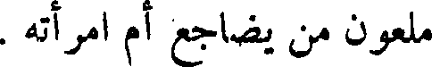
ملعون من يضاجع أم امرأته .
File: 000038.gt.txt (if the image is defective, simply delete all Arabic text and the line will be excluded)
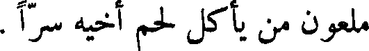
ملعون من يأكل لحم أخيه سراً .
File: 000039.gt.txt (if the image is defective, simply delete all Arabic text and the line will be excluded)
ملعون من يأخذ رشوة في قتل نفس زكيه ظلماً .
File: 000040.gt.txt (if the image is defective, simply delete all Arabic text and the line will be excluded)
ملعون كل من لم يعمل بوصية الله .
File: 000041.gt.txt (if the image is defective, simply delete all Arabic text and the line will be excluded)
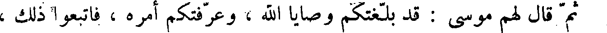
ثم قال لهم موسى : قد بلغتكم وصايا الله ، وعرفتكم أمره ، فاتبعوا ذلك ،
File: 000042.gt.txt (if the image is defective, simply delete all Arabic text and the line will be excluded)
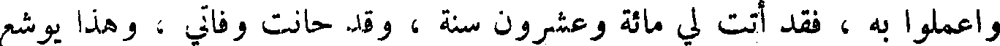
واعملوا به ، فقد أتت لي مائة وعشرون سنة ، وقد حانت وفاتي ، وهذا يوشع
File: 000043.gt.txt (if the image is defective, simply delete all Arabic text and the line will be excluded)
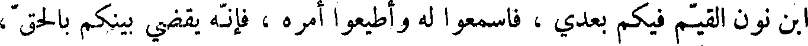
ابن نون القيم فيكم بعدي ، فاسمعوا له وأطيعواأمره ، فانه يقضي بينكم بالحق ،
File: 000044.gt.txt (if the image is defective, simply delete all Arabic text and the line will be excluded)
وملعون من خالفه وعصاه .
File: 000045.gt.txt (if the image is defective, simply delete all Arabic text and the line will be excluded)
وكانت بين وفاة هارون إلى أن حضرت موسى الوفاة سبعة اشهر ، ثم صعد
File: 000046.gt.txt (if the image is defective, simply delete all Arabic text and the line will be excluded)
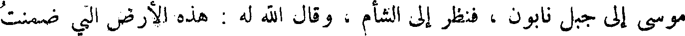
موسى إلى جبل نابون ، فنظر إلى الشأم ، وقال الله له : هذه الأرض التي ضمنت
File: 000047.gt.txt (if the image is defective, simply delete all Arabic text and the line will be excluded)
بيت المقدس ، وبنى الهيكل ، وأقام على بنائه ستا وأربعين سنة ، وفي زمانه
File: 000048.gt.txt (if the image is defective, simply delete all Arabic text and the line will be excluded)
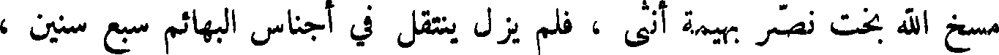
مسخ الله بخت نصر بهيمة أنثى ، فلم يزل ينتقل في أجناس البهائم سبع سنين ،
File: 000049.gt.txt (if the image is defective, simply delete all Arabic text and the line will be excluded)
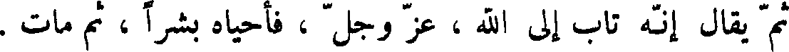
ثم يقال انه تاب إلى الله ، عز وجل ، فأحياه بشراً ، ثم مات .
File: 000050.gt.txt (if the image is defective, simply delete all Arabic text and the line will be excluded)
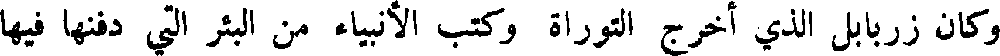
وكان زربابل الذي اخرج التوراة وكتب الأنبياء من البئر التي دفنها فيها
File: 000051.gt.txt (if the image is defective, simply delete all Arabic text and the line will be excluded)
بخت نصر ، فوجدها بحالها لم تحترق ، فأعاد نسخ التوراة وكتب الأنبياء وسننهم
File: 000052.gt.txt (if the image is defective, simply delete all Arabic text and the line will be excluded)
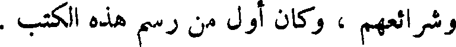
وشرائعهم ، وكان أول من رسم هذه الكتب .
File: 000053.gt.txt (if the image is defective, simply delete all Arabic text and the line will be excluded)
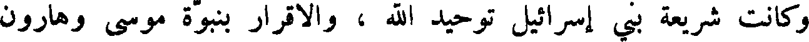
وكانت شريعة بني إسرائيل توحيد الله ، والإقرار بنبوة موسى وهارون
File: 000054.gt.txt (if the image is defective, simply delete all Arabic text and the line will be excluded)
ابني عمران بن قاهث بن لاوي بن يعقوب بن إسحاق بن إبراهيم خليل الله ،
File: 000055.gt.txt (if the image is defective, simply delete all Arabic text and the line will be excluded)
وكان صيامهم في كل سنة ستة أيام أولها في رأس السنة ، وهم يعدون رأس
File: 000056.gt.txt (if the image is defective, simply delete all Arabic text and the line will be excluded)
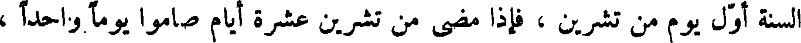
السنة أول يوم من تشرين ، فإذا مضى من تشرين عشرة أيام صاموا يوما واحدا ،
File: 000057.gt.txt (if the image is defective, simply delete all Arabic text and the line will be excluded)
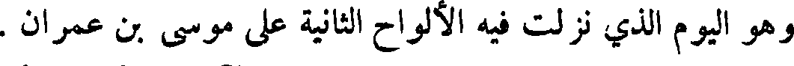
وهو اليوم الذي نزلت فيه الألواح الثانية على موسى بن عمران .
File: 000058.gt.txt (if the image is defective, simply delete all Arabic text and the line will be excluded)
ويصومون لعشر خلون من كانون الآخر يوما واحدا ، وهو يوم نجى
File: 000059.gt.txt (if the image is defective, simply delete all Arabic text and the line will be excluded)
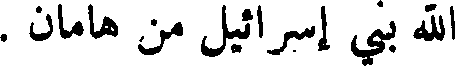
الله بني إسرائيل من هامان .
To Save: `Ctrl+s`, make sure to choose `Webpage, complete`!